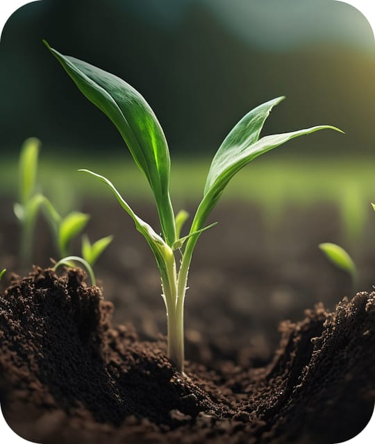
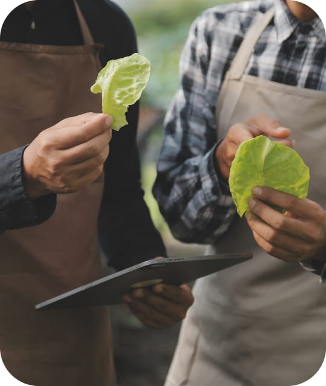
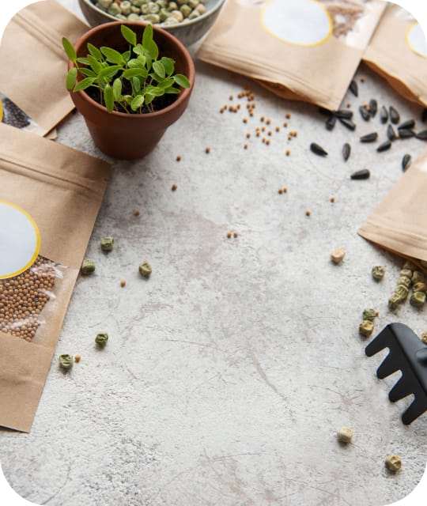

Sustainability in Action: Our Eco-Conscious Initiatives
Welcome to our Initiatives page! Here, we delve into the core of what makes Farm Fresh Harvests stand out: our unwavering commitment to sustainability and eco-friendly practices. Through innovative approaches and dedicated stewardship, we strive to nurture the land that feeds us, ensuring it remains fertile and vibrant for generations to come. Discover how we're making a difference, one farm at a time.
- 
Sustainability Practices
At the heart of our network is a deep-rooted belief in sustainable agriculture. Our farms adopt practices that not only yield high-quality produce but also heal the planet. We practice organic farming, avoiding synthetic pesticides and fertilizers, and embrace permaculture principles to work in harmony with nature. Our use of regenerative agriculture techniques restores soil health and sequesters carbon, while renewable energy projects on our farms reduce our carbon footprint.
Each initiative is a step towards a more sustainable future. We've seen tangible benefits in soil vitality, farm productivity, and ecosystem health, all highlighted through our detailed case studies.
- 
Environmental Stewardship
Protecting the environment guides everything we do. Our farms employ water conservation measures like rainwater harvesting and drip irrigation, ensuring efficient use of every drop. We enhance soil health through natural composting, cover cropping, and minimal tillage, creating a vibrant, living ecosystem beneath our feet.
Our commitment extends to restoring habitats and preserving wildlife, with pollinator-friendly plantings and natural pest management strategies. Success stories, supported by before-and-after visuals, showcase the positive effects of these practices on local biodiversity and ecosystem resilience.
- 
Eco-Friendly Packaging and Practices
Sustainability doesn't stop at the farm gate. We're dedicated to eco-friendly packaging and shipping, using biodegradable, recyclable, or compostable materials to minimize waste and environmental impact. Engaging in carbon offset programs, we aim to counterbalance emissions from transporting our goods, making us a part of the climate change solution.
Through these efforts, we demonstrate it's possible to deliver high-quality, sustainable products without harming our planet. This commitment underlines our dedication to practices and initiatives that benefit the earth and pave the way for a sustainable, environmentally conscious future in agriculture.
Stay updated with the latest from our farms!